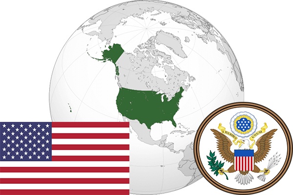

To`liq nomi: Amerika Qoʻshma Shtatlari
Region: Shimoliy Amerika
Qonunchilik shakli: Federativ respublika
Mustaqillik kuni: 4-iyul, 1776-yil
Poytaxt: Vashington
Maydoni: 9,631,418 km²
Chegaradosh davlatlari: Kanada, Meksika
Aholisi: 324,784,000 (2017-yil)
Aholi zichligi: 30/km²
Aholining o`rtacha yoshi: 79,04 yil
Rasmiy tili: Ingliz tili
Dini: Xristian
Pul birligi: AQSh dollari
Telefon prefiksi: +1
Internet domen: .us
Xalqaro tashkilotlarga a`zoligi: BMT, NATO
Dengiz va okeanlarga chiqishi: Tinch okeani, Atlantika okeani
YIM: Butun: $20.19 trln. (2017-yil) Jon boshiga: $61,687
Yirik shaharlari: Nyu-York, Vashington, Chikago, Los-Anjeles, Filadelfiya, Atlanta, Sitl, Detroyt.